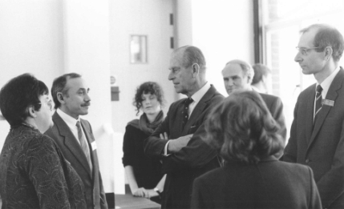

Founder
Dr. h.c. Evgeny Yunosov is a Russian science educator perhaps most widely known as the Founding Father of the International Young Physicists’ Tournament.
The Archive is passionate and proud to provide researchers, organizers, and participants of the IYPT with hundreds of articles, interviews, documents, and letters written by Evgeny Yunosov. His writings, chronicling the creation and growth of the global IYPT movement, continue to resonate in the IYPT today. This section provides a glimpse of Evgeny Yunosov’s life and work.
“We had 17 insane problems”
In the late 1970s, Evgeny Yunosov sought a student activity that would instill an excitement in physics, teach students practical skills, and shape their interests. While neither pencil-and-paper olympiads nor science clubs could fulfill these goals fully, he believed that a new activity must combine competitive and cooperative features, stir debates, and allow students and teachers to gather around a motivating cause. It would be a tool to foster intrinsic motivation in students if they could work on attractive research projects in a team-oriented environment, and then measure themselves against other teams. Albeit the proposed problems would encourage the teams to devise own methods and solutions, it would be essential that all teams are familiar with the topics other teams have worked on, such that discussions are substantive and challenging, unlike what the students could expect at a science fair. To spark their enthusiasm, students would be given the most complex, exciting and thrilling physics problems, and enough preparation time.
This vision laid the foundations for the Young Physicists’ Tournament and its iconic Physics Fights.
“They demanded to continue”
The 1st YPT, hosted by Evgeny Yunosov in Moscow in March 1979, enjoyed considerable popularity and has been an annual event ever since, gradually gaining a national and international following by the late 1980s. Evgeny Yunosov spearheaded the movement, developed scrupulous and meticulously detailed regulations, published numerous papers on the new activity, built a participant community, and established cooperation with prominent figures among top scientists and education officials in the Soviet Union.
“Let’s go international”
Starting from the summer of 1987, he identified a group of high profile supporters, including Evgeny Velikhov, Georgiy Zatsepin, and Lyudmila Shvetsova, to assist his effort in bringing the Tournament to the international arena. The 1st IYPT, with 31 teams, enjoyed major national and international coverage in March and April 1988 and is now widely considered as an identifiable landmark in the history of physics education.
In recognition of global impact of the newly created IYPT, Soviet Union awarded Evgeny Yunosov with the Arkady Gaidar Badge of Merit in January 1989 and with the Lenin Komsomol Prize in Education in October 1989. By this time, the IYPT had attracted teams of all 15 constituent Soviet republics, 6 European nations, and such prominent enthusiasts as Hans Jordens, future President of the International Physics Olympiad. The annual IYPT soon became a story of visionary leadership that has allowed the competition to survive against all the odds when the Soviet financial support ended in 1991, and the event could only rely on its own financial resources and infrastructure. To recognize all these accomplishments, the International Organizing Committee of the IYPT awarded its Founder with a lifetime honorary position of the IYPT Vice-President in October 1994.
- Evgeny Yunosov. A few words about the Young Physicists’ Tournament. IYPT Magazine 1, 14-19 (2012) [pdf]
Impact on science education today
The true value of Evgeny Yunosov’s accomplishment goes far beyond mere creation of a competition and an organization. From the onset, he crafted the Young Physicists’ Tournament as a portable education platform that could be
- deployed anywhere in the World;
- keep relevance on any scale, from an elective school activity to a nationwide or cross-border event;
- provide a tangible toolkit to establish links between schools and universities;
- attract students with a wide range of academic achievements and interests;
- and eventually extend the reach to other scientific disciplines.
This lead vision has been elaborated in publications for various audiences and interviews mostly dating to 1987—1990. Today, the fledgling IYPT movement he founded in 1988 has seen participants from almost 50 countries, has established national committees in over 30 countries, has emerged as a major landmark in the international physics education calendar, and has been awarded with the medal of the International Commission on Physics Education in recognition of its wide-ranging contribution to international physics education.
The influence of his work has inspired creation of hundreds of similar team-based tournaments with research problems and fights where teams discuss, argue, and switch roles as reporters, opponents, and reviewers. These tournaments extend from natural sciences to humanities, from university undergraduates to middle school students aged below 16, and from ambitious global initiatives to regional-scale events with three or four competing teams.
Participants speak
In an email to Evgeny Yunosov dated May 18, 2013, Bárbara Cruvinel Santiago wrote, “I know you don’t know who I am. My name is Barbara; I’m a former IYPT participant and tournament’s enthusiast from Brazil. [...] I wanted to tell you something since IYPT 2012: thank you for creating IYPT! I know you may have heard this from lots of people already, but this tournament truly changed my life. If it wasn’t for the IYPT, I wouldn't be where I am today and my life would be totally different. [...] I acknowledge everything I have won until today to the IYPT, even the majority of college application essays were about how IYPT changed my vision about physics. [...] If it wasn’t for the IYPT, I know nothing of this would be possible; I wouldn’t get into one of my dream universities, [...] I wouldn’t have met so many bright people of my age, I wouldn’t have travelled and met so many different cultures and, most of all, I wouldn’t have fallen in love with physics and research. [...] Today, I write a blog about the IYPT and the thing that I most love doing is talking about the great tournament you created 26 years ago and convincing younger people to participate in IYPT.”
Doctor Honoris Causa
To celebrate his vision and extraordinary contributions touching hundreds of thousands of lives and careers, Ural Federal University awarded an Honorary Doctorate (Doctor Honoris Causa) to Evgeny Yunosov in May 2016. Insignia and the mantle were presented during the 29th IYPT on June 27, 2016.
- References and endorsements by David Lee (European Physical Society, Secretary General), Hideo Nitta (International Commission on Physics Education, Chair), Alexander Korotkov (University of California, Riverside, Professor), Alexander Kusenko (University of California, Los Angeles, Professor), Andrzej Nadolny (Polish Physical Society, Honorary Member), Ilya Martchenko (IYPT, Treasurer) [pdf]
- Справка о деятельности кандидата на степень почетного доктора УрФУ Е. Н. Юносова (И. Марченко, 26.04.2016) [pdf]
- Инициатор турнира юных физиков стал почетным доктором вуза (urfu.ru, 27.06.2016) [html]
- BREAKING: Evgeny Yunosov, Founder of IYPT, awarded Honorary Doctorate (Dr. h.c.) of @Ural_Federal for his outstanding contributions & vision (twitter.com/iypt, 27.06.2016) [html]
- Verleihung der Ehrendoktorwürde an Evgeny Yusonov (Erfinder und Gründer des IYPT) (GYPT - German Young Physicists' Tournament, 27.06.2016) [html]
- Fundador do IYPT, Prof. Evgeny Yunosov recebe o titulo de Doctor Honoris Causa na UrFU (IYPT Brasil, 27.06.2016) [html]
- Congratulations to the most recent UrFU graduate: Dr. h.c. Evgeny Yunosov, the Founding Father of the International Young Physicists' Tournament (IYPT, 27.06.2016) [html]
- Ohne ihn würde es das IYPT auch nicht geben. Mr. Founder, seit eben Ehrendoktor der Ural Federal University (blog.aypt.at, 27.06.2016) [html]
- Пресс-конференция в УрФУ (obltv, youtube.com, 28.06.2016) [html]
- The founder of #IYPT Mr Evgeny Yunosov (egor_moskvin, 02.07.2016) [html]
Short bio
Evgeny Yunosov was born near Moscow in 1943 where he went on to earn his degree in physics from Lomonosov Moscow State University in 1966, working on low-frequency noise in backward diodes with Vasily Potemkin. He taught physics courses at Moscow State University and various Moscow schools since 1966, having tenure as the chairman of the Physics of Oscillations department laboratory at Moscow State University. Years before these became buzzwords, he pushed the ideals of project-based learning and active learning in his tournaments, workshops, and exchange programs between Russian schools and Hills Road Sixth Form College in Cambridge. In addition to dozens of professional and popular publications in journals, Evgeny Yunosov has edited and published books about the IYPT. He advocates for science in the society and has introduced the IYPT to some of the World’s most influential scientists, including Nobel laureates Klaus von Klitzing and Douglas Osheroff, as well as to members of royal families and national leaders, including Prince Philip of the United Kingdom and President Ma Ying-jeou of Taiwan. He lives in Moscow with his wife and co-author Tatyana Korneeva and their son. Evgeny Yunosov serves as President of the Foundation for Youth Tournaments, Honorary Vice-President of the IYPT, and Chairman of the General Council of the IYNT.
Career highlights
| 1979 | Conceived, pioneered the format of Young Physicists’ Tournament; |
| 1979 | Launched the first local YPT in Moscow with 7 teams; |
| 1980 | Described the new format in an article Turnir junyh fizikov in Kvant; [html] |
| 1988 | Launched the first global IYPT in Moscow with 31 teams; |
| 1989 | Established the International Organizing Committee of the IYPT; |
| 1989 | Awarded Lenin Komsomol Prize in Education “for great achievements in the field of education and in promoting creative abilities and intellectual capacities of young students” for creation of the IYPT; |
| 1994 | Lifetime position of IYPT Vice-President awarded by the International Organizing Committee; [jpg] |
| 2013 | Launched the first global IYNT in Eskişehir with 16 teams; |
| 2013 | Celebrated the International Commission on Physics Education Medal 2013 “for outstanding contributions to international physics education” awarded to the IYPT; [pdf] |
| 2016 | Awarded an Honorary Doctorate by Ural Federal University. [html] |


![[jpg]](http://archive.iypt.org/IYPT_IOC_Oct_1994.jpg){kind=link}